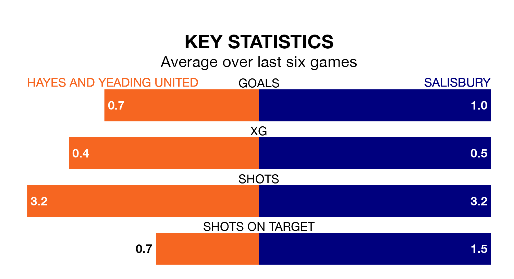

Salisbury travel to the SKYex Community Stadium for Saturday's match against Hayes and Yeading United looking to bounce back from defeat last time out in the Southern League Premier South.
Salisbury, who sit third in the league after 39 games, fell to a 2-0 home defeat to Harrow Borough on April 13.
They face a Hayes & Yeading side who picked up a win in their last match, a 2-1 victory against Gosport Borough, and who sit 17th in the table.
In the last 10 years, Hayes & Yeading and Salisbury have played each other on six occasions. Hayes & Yeading won three of them, Salisbury two, and they drew once.
On average, Hayes & Yeading scored 1.7 goals and Salisbury 1.2 in those matches.
Their last meeting was on November 11, when Salisbury won 2-1 at home.
With 54 goals in 38 games so far this season, Hayes & Yeading are scoring at below the league average rate with 1.4 goals per game. But they are conceding fewer than average too, letting in 59 goals at a rate of 1.6 per game.
Salisbury, meanwhile, are average scorers, with 1.7 goals per game. They have conceded 1.2 goals per game.
United are in disappointing form in the Southern League Premier South, with one win and two draws from their last six games.
And also with a win and two draws over that period, the visitors' form is identical – they have both taken five points from 18.
Updated: 15:40 (UTC), 18/04/24